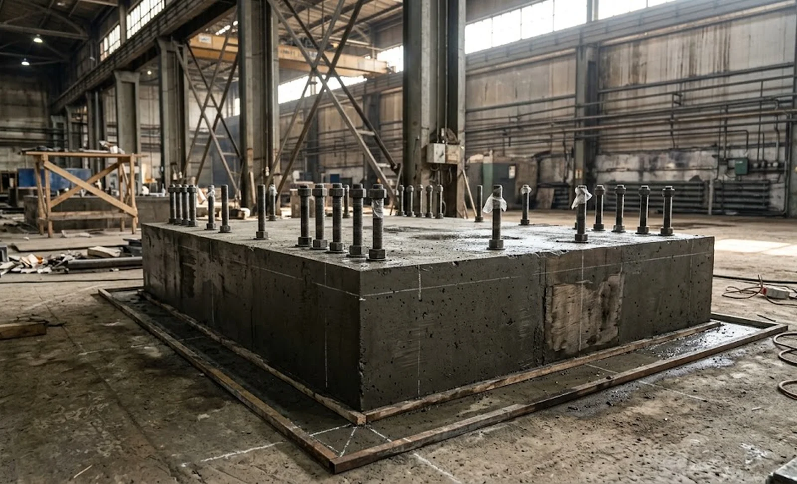
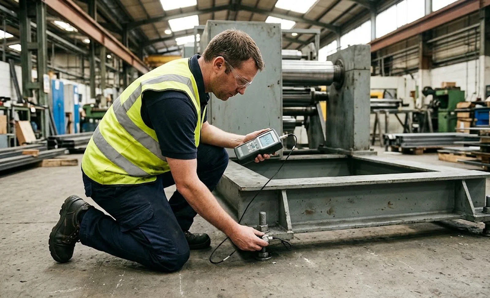

Published October 11, 2026 | By HDPTH Technical Editorial Team

When a slitter rewinder fails to hold tolerance after installation, the search usually starts at the knives, the tension system or the drive tuning. A surprising share of cases ends at the floor. The machine frame, the knife beam, the web path and every tension sensor form one structural loop that closes through the concrete under the machine. If that concrete flexes, settles unevenly or carries vibration from a compressor house two bays away, the loop moves and every precision figure quoted in the offer was measured on a foundation the buyer does not have. The site preparation items in our site preparation checklist cover utilities and layout; this guide goes deeper into the structural side, because it is the part most often left out of the contract.
How vibration reaches the cut
Vibration arrives two ways: through the floor from external sources — compressors, presses, forklift traffic, nearby rewind stands stopping under full torque — and through the machine itself from its own unwind and drive dynamics. At the knife, both paths modulate the blade contact force microscopically thousands of times per minute. The signature defect is periodic: chatter marks or alternating fuzz on the slit edge that repeats at a frequency belonging to the source, not the machine speed. The same disturbance confuses load cells and ultrasonic sensors, so the closed-loop behaviour described in our tension zone architecture guide starts chasing phantom tension changes. Roll builders feel the outcome as hardness variation along the roll, detectable with the methods in our roll hardness testing guide.
Floor conditions that break precision
The recurring offenders are concrete: slabs too thin for the machine’s static load, industrial floors that flex measurably when the machine accelerates, buildings where the production hall slab is also the roof span over a basement, and expansions joints that cross the machine footprint so each side of the frame sits on ground with different stiffness. Settlement adds a slower fault — a frame levelled perfectly at commissioning that twists over six months as the slab deflects, showing up as lane position drift across the width and uneven lay-on pressure, the interaction covered in our nip pressure guide. None of these is visible on installation day without a survey, and all of them become expensive once the machine is grouted and anchored.

Specifying the foundation in the purchase contract
The supplier must state, in writing, what the machine stands on. Require a foundation drawing with minimum slab thickness and reinforcement assumptions, permissible floor loading under the frame feet, anchor bolt or chemical anchor details, flatness and level tolerances for the footprint, and the maximum permissible vibration velocity at the machine base — the quantity and limits used in our vibration acceptance guide. Insist that the supplier reviews your floor data, not just your floor plan, before finalising the design. Where the survey shows an aggressive environment, specify isolation explicitly: tuned passive isolators under the frame for incoming disturbance, or a stiffer local foundation for a machine that generates its own shocks, as heavy unwinds do in the configurations compared in our unwind design guide. The rigging work itself, and the cost of moving machines that were anchored badly the first time, is covered in our rigging and installation guide.
Verifying precision where the machine will live
Factory acceptance on the supplier’s floor is necessary but not sufficient; the conditions at the buyer’s site differ, and the SAT process in our SAT guide exists for exactly this reason. Before installation, measure the background vibration spectrum at the machine location with neighbouring equipment running normally. After commissioning, repeat the measurement with the machine idle, running and with external equipment switched — and correlate any periodic edge defect with the measured spectrum. If the defect frequency matches an external source, the fix is isolation or source management, not endless re-tuning of knives that were never wrong. Write these measurements into the acceptance plan alongside the slit width and edge quality classes, so that a foundation fault is a documented, contractually addressable finding instead of an argument between departments. Precision is not only bought — it is stood on.
Planning an installation site?
Send HDPTH your floor drawings and hall layout. We will issue the foundation specification, permissible vibration limits and isolation recommendation for your machine, and support the pre-installation floor survey so the precision quoted is the precision delivered.
Submit Your Project InquiryFrequently asked questions
How does vibration affect slitting precision?
External vibration reaches the knife beam and the web as micro-movement that modulates the blade contact force. The visible results are periodic edge defects — chatter marks, intermittent fuzz or burr — that repeat at a frequency matching the vibration source rather than the machine speed. It also disturbs web guides and tension sensors, so slit width consistency and roll formation degrade even when the cutting mechanics themselves are correctly set.
Which floor conditions cause precision problems on a slitter rewinder?
Thin slabs over soft fill, floors that flex under the machine’s static weight, foundations shared structurally with vibrating equipment, uneven settlement that twists the frame after levelling, and expansion joints that cross the machine footprint. Each of these lets the frame move relative to itself or to the incoming web, which the machine’s own levelling cannot correct after installation.
Can the machine compensate for a weak floor with vibration isolation?
Isolation helps against incoming vibration but cannot replace a stable foundation. Passive isolators tuned to the disturbance frequencies absorb external energy, yet a floor that flexes under the machine’s own load still lets the frame distort, which shows up as load-dependent geometry errors — lane position drift, uneven nip and beam deflection that changes with speed. The foundation carries the machine; isolation only keeps disturbance out.
What foundation requirements should buyers include in the contract?
Ask the supplier for a foundation drawing stating minimum slab thickness, permissible floor loading, anchor or isolation details, and flatness and level tolerances for the machine footprint. Add a requirement to state the maximum permissible vibration velocity at the machine base, an obligation to review the buyer’s floor data before manufacture, and a clause that edge quality acceptance is measured on the machine as installed at the buyer’s site.
How should vibration acceptance be measured?
Measure the floor background spectrum at the machine location before installation, then after commissioning measure again with the machine running and with nearby equipment on and off. Compare against the supplier’s stated limits using the methods in the acceptance checklist, and correlate any periodic edge defect with the measured spectrum. If the defect frequency matches an external source, the isolation design — not the machine — goes back to the drawing board.